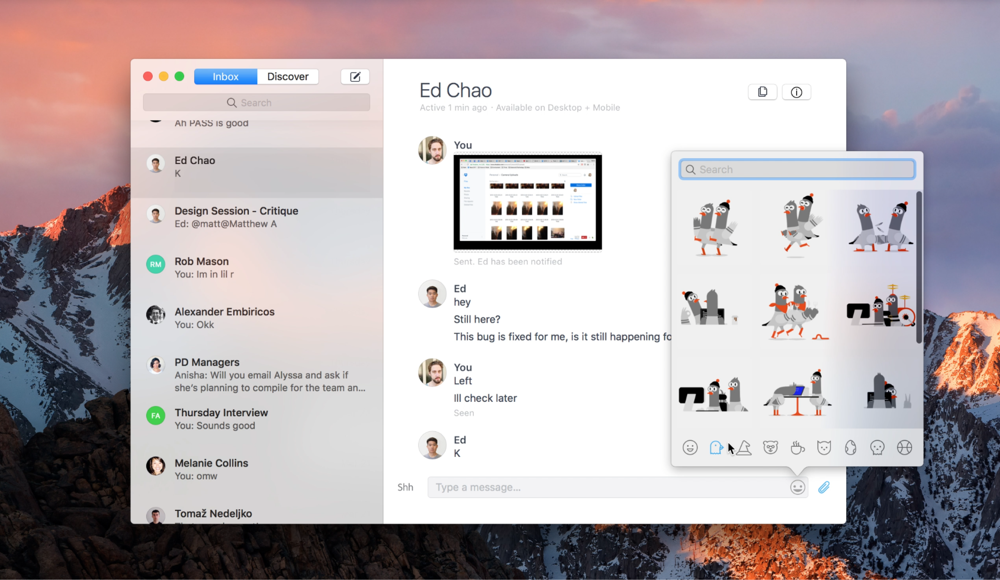
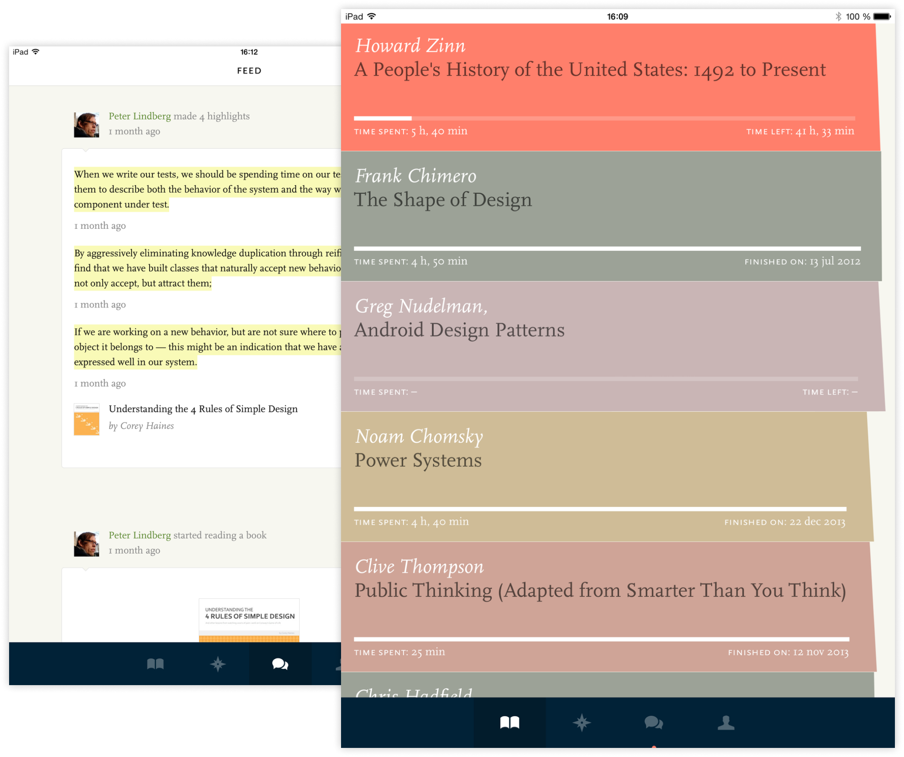

Labelbox
2018 – 2019
Labelbox is a training data platform for machine learning applications.
As the first designer I led an effort that defined a new company strategy. I also led the design and development of the label editor, an online graphics editor tailored to creating ground truth for machine learning applications.

Dropbox
2014 – 2017
During my time at Dropbox, the company was undergoing a strategic transition, switching its core offering from file storage to work collaboration.
As part of design leadership, I helped grow the design team from 15 to 80 people. I led the design team that were responsible for the core Dropbox experience on desktop, mobile and web. I also helped initiate and lead several early stage product efforts, including a redesign of all Dropbox web apps among others.

Readmill
2010 – 2014
A reading app and community for iOS and Android. Readmill had a distraction-free reading experience and easy sharing of marginalia with other readers. The vision of Readmill was to create a shared e-reading experience that honored the rich heritage of the book medium.
I co-founded Readmill and led product, design and engineering. We sold the company to Dropbox in 2014.